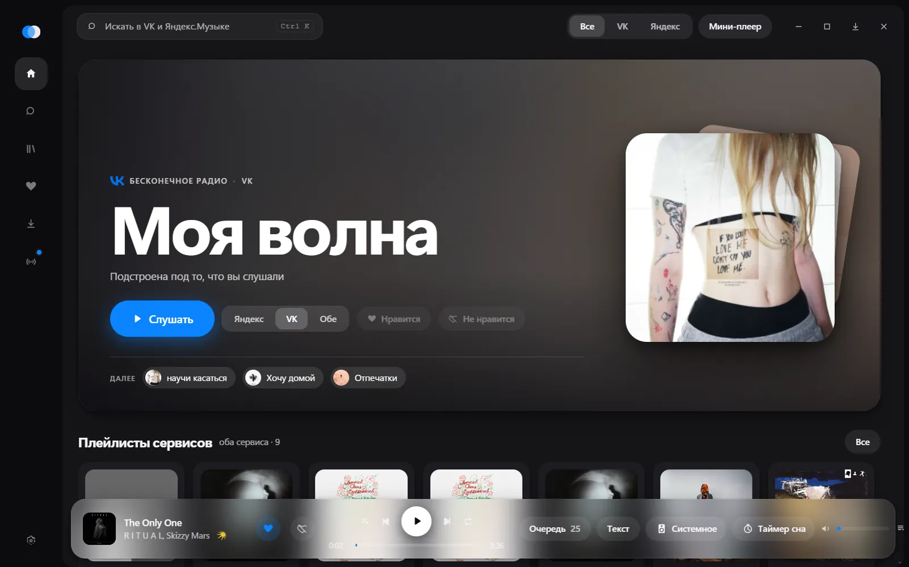
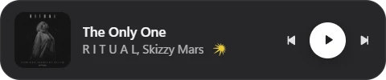
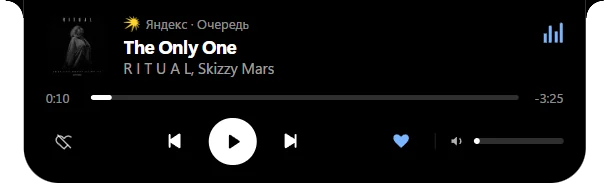
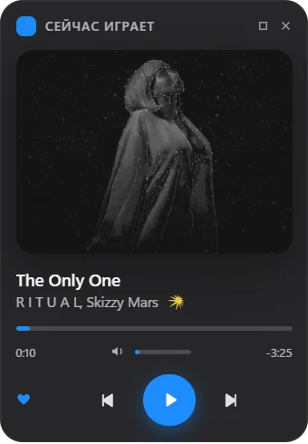
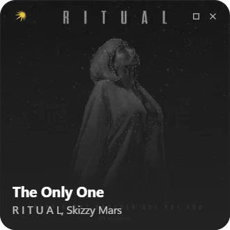
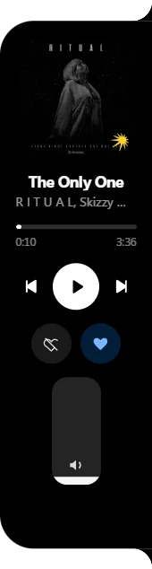
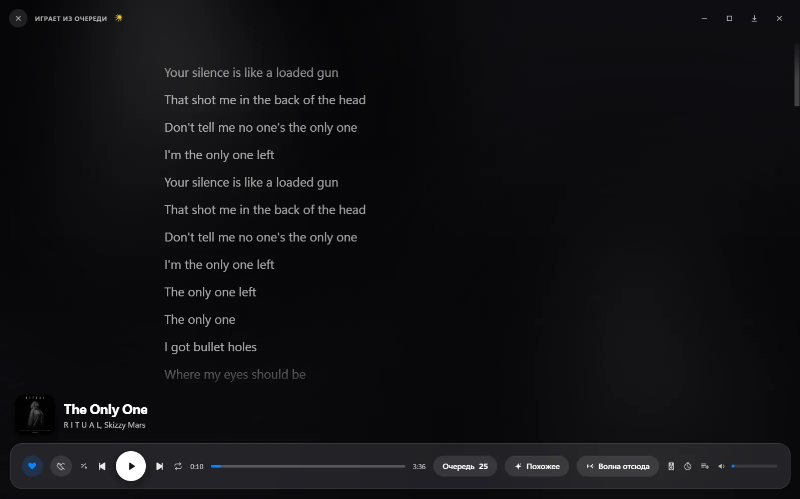
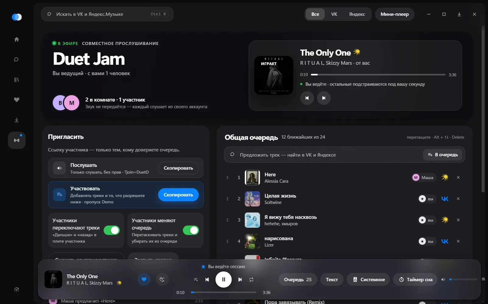
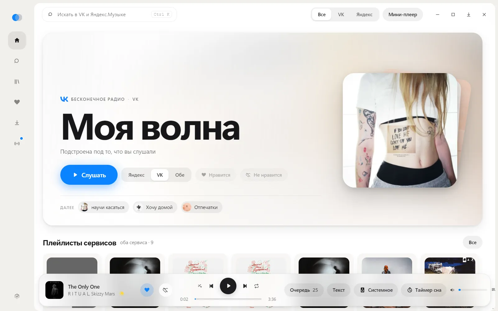
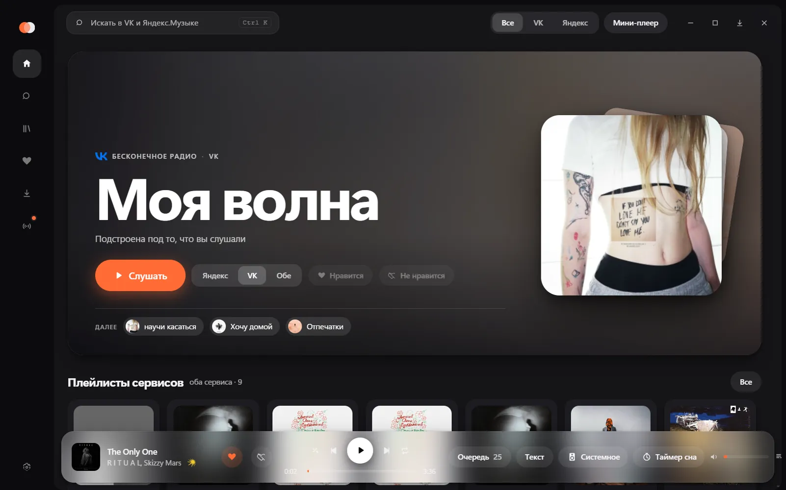

Поиск сразу по обоим сервисам
Одна строка ищет и в VK Музыке, и в Яндекс.Музыке. У каждого трека видно, откуда он.
Duet — приложение для компьютера, в котором оба сервиса живут в одном окне. Один поиск, одна очередь, одно «Вам нравится», и не нужно держать открытыми две вкладки.
Обновляется сам. Можно подключить один сервис или оба.

Duet не заменяет VK и Яндекс, а собирает их вместе: музыка играет из ваших аккаунтов, а слушаете вы её в одном месте.
Одна строка ищет и в VK Музыке, и в Яндекс.Музыке. У каждого трека видно, откуда он.
«Вам нравится» из обоих сервисов одним списком. Свои плейлисты, где рядом лежат треки из VK и из Яндекса.
По отдельности или вперемешку. А ещё бесконечная волна по любому треку.
Если песня недоступна в одном сервисе, Duet сам найдёт её в другом и включит оттуда.
Строки подсвечиваются в такт, щелчок перематывает к нужной. Работает и для треков VK.
Треки можно сохранить и слушать без интернета, в том числе автоматически.
Мини-плеер появляется, когда вы сворачиваете Duet. По наведению раскрывается, его можно перетащить куда угодно, хоть на другой монитор. Во время игр и полноэкранного видео он прячется сам.





Плеер во всё окно показывает текст с подсветкой текущей строки. Для треков VK метки времени берутся у Яндекса, поэтому подсветка работает и там.

Отправьте ссылку, и у друга заиграет тот же трек. Звук не передаётся: каждый слушает из своего аккаунта, даже если у вас Яндекс, а у него только VK.

Цвет акцента можно выбрать самому или взять с обложки того, что играет. Несколько видов главной и плеера, анимации настраиваются и выключаются.


Duet-…-setup.exe из последнего релиза, около 90 МБ.
Да. Duet бесплатный, у него открытый исходный код под лицензией MIT. Подписки самих сервисов оформляются у них, Duet здесь ни при чём.
Duet играет из вашего аккаунта, поэтому правила те же, что в официальных приложениях: всё, что сервис разрешает вам слушать, работает и в Duet, а чего не разрешает — недоступно и здесь.
Да. Duet работает и с одним VK, и с одной Яндекс Музыкой. Второй сервис добавляет общий поиск и избранное, а ещё запасной вариант: если трек не играет в одном сервисе, Duet найдёт его во втором.
Вход идёт через настоящие страницы VK и Яндекса, открытые внутри приложения. Duet не видит ваш пароль и хранит только сессию. Исходный код открыт, его можно проверить.
У установщика нет платной цифровой подписи, поэтому фильтр SmartScreen его не узнаёт. Нажмите «Подробнее», затем «Выполнить в любом случае».
Пока только для Windows 10 и 11, 64-битной.
Нет, это независимый проект. Duet обращается к сервисам теми же путями, что их официальные приложения, но это не публичное API: оно может поменяться в любой момент.
Бесплатно, без регистрации, вход вашими аккаунтами VK и Яндекса.